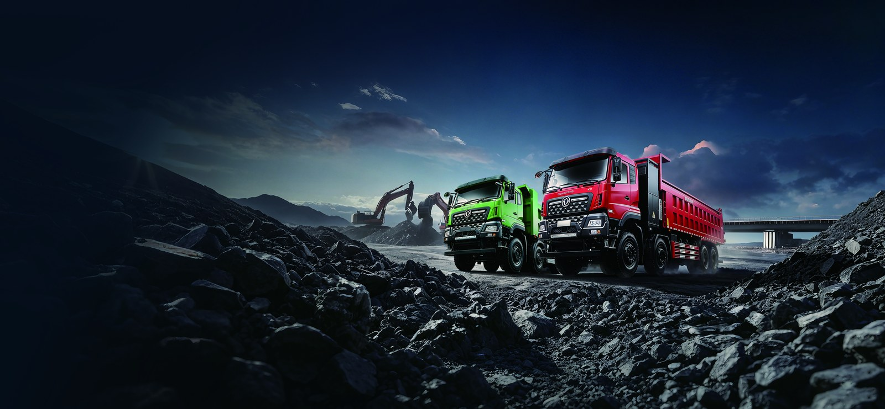

The northern Tanzania safari circuit — Arusha, Tarangire, Lake Manyara, the Ngorongoro Crater and the Serengeti gate — runs on a logistics tail that guests never see: daily lodge supply trucks hauling food, water, linen, fuel and guest baggage along gravel and dusty tracks. For operators in this corridor, the electric truck is not only cheaper to run; its near-silent operation protects the wildlife experience that guests pay premium rates to enjoy. This article explains why the Dongfeng KT5L is the logical EV truck for Arusha safari logistics, how solar-charged lodges close the loop, the TCO on the circuit, and a deployment model for conservancies.
Safari lodges sit inside or beside protected ecosystems where noise is a genuine management issue. A diesel supply truck arriving at 06:00 wakes wildlife and, more importantly, intrudes on the guest experience at neighbouring camps. An electric truck’s low NVH lets a lodge receive a 07:00 delivery without disturbing the bush. Several conservancies now write “low-noise supply” into their concession agreements — a quiet EV truck becomes a compliance asset, not just a cost tool. The absence of diesel smell at the kitchen gate also improves food hygiene perception, a detail eco-auditors note.
The KT5L electric cargo truck is a medium-duty platform tuned for mixed tarmac-and-track duty between Arusha town and the camps.
| Parameter | KT5L Specification |
|---|---|
| GVW (payload class) | 7.5 – 9.5 t |
| Battery | CATL LFP, 106 – 130 kWh |
| Drive motor | LvKong permanent-magnet, 120 – 180 kW |
| Real-world range | 180 – 220 km (loaded, mixed track) |
| DC fast charge (20–80%) | 35 – 60 min |
| Battery warranty | 8 years / 4,500 cycles to 70% SOH |
| FOB price (China) | US$46,000 – 58,000 |
The LFP pack is the right chemistry for dusty, hot, high-cycle camp duty: it tolerates partial charging at the lodge and shrugs off the temperature swings between Arusha’s 1,400 m base and the cooler crater rim. Sealed connectors and dust-rated lighting are recommended options for the track leg.
Most premium lodges already run 20–80 kWp solar arrays with lithium storage for guest power. Adding a 60 kW DC charger lets the supply truck draw from midday solar surplus that would otherwise be curtailed. The economics are striking: a lodge paying US$0.30–0.45/kWh for diesel-generated backup power, or hauling diesel for its own generator, can instead charge the KT5L at a levelized US$0.08–0.12/kWh from its own array.
A lodge running 30,000 km/year of supply movement at ~22 l/100 km diesel (slow track speeds, heavy load) burns 6,600 l. Tanzanian diesel at ~US$1.10/l is ~US$7,260. The KT5L at ~1.2 kWh/km draws 36,000 kWh; at lodge solar US$0.10/kWh that is US$3,600. Saving ~US$3,660/year on energy, plus ~US$1,500 maintenance, gives ~US$5,160 annual advantage. Against the FOB step from a used diesel, payback is 30–42 months — and the eco-certification and concession-compliance value is on top of that. For a multi-camp operator the brand value alone often justifies the step even where diesel is still cheap.
The cleanest rollout is a shared KT5L serving two or three camps on a loop, charged at the camp with the largest solar array. One truck, one DC post, three delivery windows — the fixed loop keeps utilisation high and the payback short. The conservancy logs the emissions avoided and uses it in its annual eco-report, which supports premium-rate bookings.
Keep one technician per camp group trained on the LvKong drive isolation, and hold common parts (lights, brake pads, suspension) locally since they match regional diesel trucks. The high-voltage items — pack, motor, inverter — are field-swapped, not field-repaired, so a spare 130 kWh pack at the main solar camp covers the loop. This light-touch support model is why a remote safari operator can run an EV truck without a city workshop on call.
Tanzania’s import process for fully-built EVs is workable via the TBS conformity route, and the Tanzania electric truck market guide details the Arusha clearance and Dar es Salaam → Arusha transit. For safari operators, the KT5L is the rare EV truck that is both a cost decision and a brand decision — quiet, clean supply that guests and conservancies both notice.
Shaanxi Fenghan Trading supplies the KT5L with a safari-spec build (sealed connectors, dust-rated lighting, lodge DC-charge compatibility). Ask for an Arusha circuit TCO sheet and a solar-charger layout for your camp.
A worked example makes the case concrete. A camp running one KT5L on a 90 km return supply loop, 300 days a year, drives 27,000 km and draws ~32,400 kWh. At grid/diesel-genset US$0.30/kWh that is US$9,720; at lodge solar US$0.10/kWh it is US$3,240 — a US$6,480 annual energy saving before maintenance. Add ~US$1,400 maintenance avoidance and the unit returns ~US$7,880/year against a US$52,000 FOB step, payback ~34 months, with the eco-certification value on top. The loop model matters: one truck serving three camps on a fixed roster keeps utilisation above 70% and avoids the half-empty dead legs that wreck urban EV truck economics.
Conservancies should also log the non-financial return. A quiet, zero-emission supply run is a marketing asset in a sector where guests choose camps by their environmental stance; several operators report the EV truck itself features in pre-arrival communications. When the brand value is monetised into occupant-night premium, the effective payback shortens further, and the concession-renewal clause favouring low-noise supply de-risks the licence to operate.
For mixed fleets, run the KT5L on the camp loop and keep one diesel unit for the long Arusha–Dar leg until that corridor gets depot charging. This parallel approach lets a lodge electrify the highest-return duty first, prove the economics to owners, then extend the electric share as solar capacity grows. The mistake is buying a full electric fleet on day one and discovering the long leg has nowhere to charge.
Spares strategy for remote camps differs from city fleets. Hold a spare 130 kWh pack at the largest solar camp so a pack fault is a swap, not a tow; a tow from the Serengeti gate is a multi-day, multi-currency event. The pack is the only field-replaceable high-value item, and one spare covers three trucks on a loop. Tyres, lights and suspension are common with regional diesel trucks, so the local workshop already stocks them.
Ready to electrify your fleet? Contact Shaanxi Fenghan Trading — authorized Dongfeng EV truck exporter. WhatsApp: +86 153 1943 1311 | Email: sales@fenghan-trade.com | dongfengevtrucks.com
🌐 Our Network: Fenghan Trade (SAGMOTO/SHACMAN Truck Export) · SAGMOTO cargo truck flatbed box stake